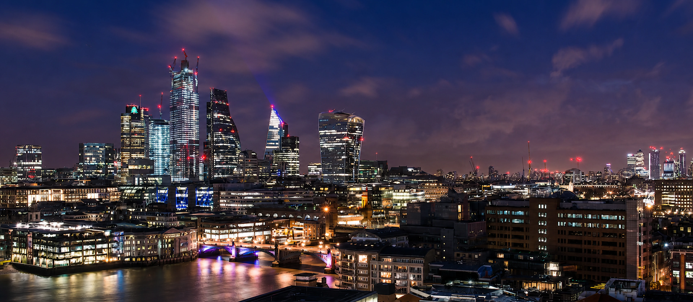
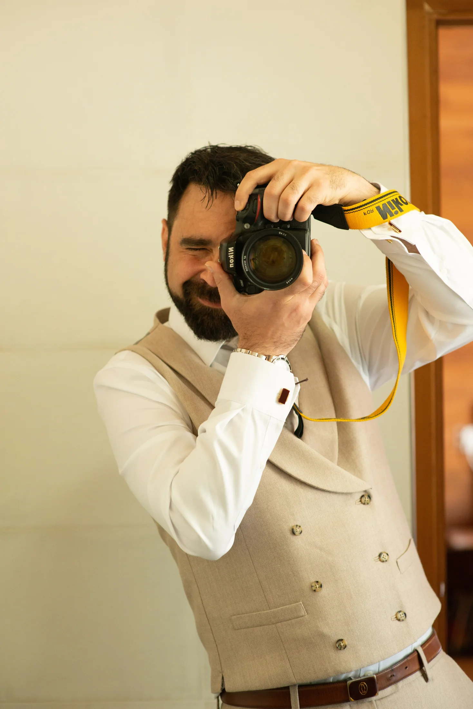

£125
Portrait Essential
30 minutes · one London location · 5 carefully edited images.
Request a date ↗
London based · Cádiz born
The essence
I photograph the unguarded gestures, changing light and small details that turn a day into a memory. The result is imagery that feels natural now and grows more meaningful with time.

London / ObservationLooking for the human scale in a restless city.
Stories liveSelected work
A living collection of contextual portraits, couples, celebrations and street stories across London and Cádiz.
Select any photograph for a closer look.
“I want an image to feel like a memory you had forgotten — familiar, alive and entirely your own.”

Miguel Ángel López PrietoLondon · Cádiz
Behind the camera
I am a London-based photographer, born in Cádiz — two places that continue to shape how I see.
Cádiz gave me a feeling for open light, spontaneity and the theatre of everyday life. London taught me to notice layers: people moving at different rhythms, cultures meeting, and a story unfolding on every corner.
My approach is calm, curious and people-first. I offer enough direction to help you feel at ease, then leave space for the unexpected. That is often where the truest photographs are found.

Formally trainedNew York Institute of Photography · A Grade
Launch experiences & pricing
Thoughtful photography for real people and purposeful businesses. These are introductory London prices while One Storyteller builds its local client community.
£125
30 minutes · one London location · 5 carefully edited images.
Request a date ↗£225
75 minutes · one or two nearby locations · 15 carefully edited images.
Request a date ↗£275
90-minute couples walk · 20 carefully edited images · private gallery.
Request a date ↗from £395
Up to 2 hours · planning call · 25 images for web and organic social.
Request a quote ↗from £495
Up to 2 hours · ceremony, portraits and atmosphere · 100+ images.
Request a date ↗from £895
Up to 4 hours · planning call · 250+ images in a private gallery.
Request a date ↗Keep the details
Five concise pages covering the approach, inclusions, booking and delivery.
Prices are starting prices and subject to date, location and final brief. Travel beyond central London and paid advertising licences are quoted separately.
A simple process
Share what you are planning, who it is for and how you want the photographs to feel.
I confirm availability and send a clear recommendation and written quote. There is no charge at enquiry stage.
Your date is secured with a 30% retainer. The session stays relaxed; your edited photographs arrive in a private online gallery.
Client words
“Proactive, a great communicator and very well organised.”
“His personality really makes a difference when capturing amazing natural shots.”
“Professional from start to finish.”
Start a conversation
Tell me a little about it, or reach out directly by phone, WhatsApp or email. I will come back to you with availability and a thoughtful next step.